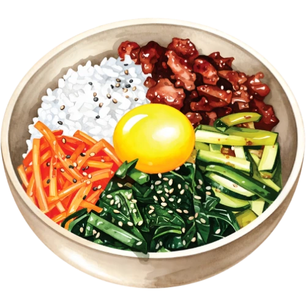
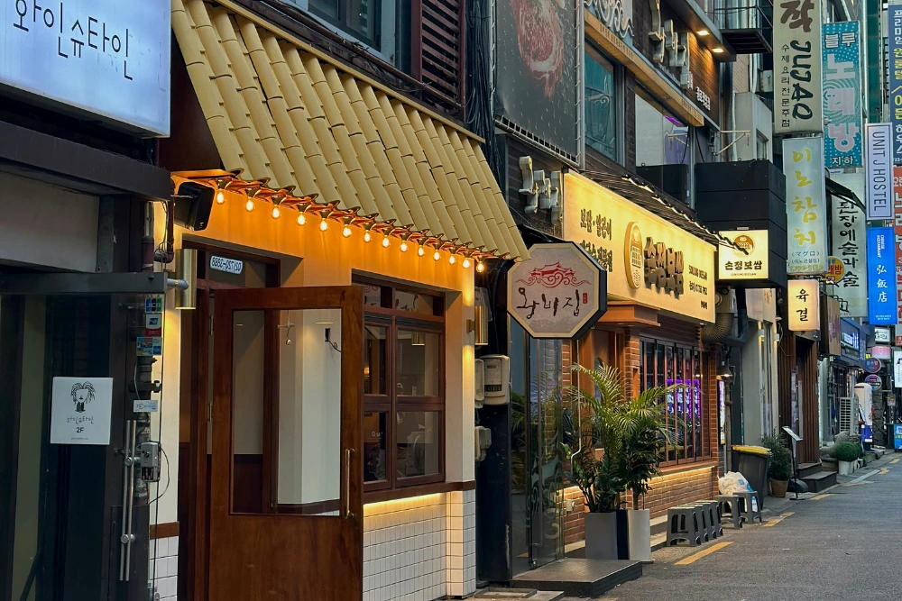

About Damye
Damye is a platform designed to help users discover authentic Korean restaurants (not only Korean food) beyond mainstream trends.

What Does Damye Mean?

Why It Matters
Many small, local Korean restaurants are often overlooked as social media and trends promote only a limited number of places.
Our Values
Authentic
We value honest and authentic dining experiences that represent Korea’s real food culture, traditions, and local identity.
Community
We believe local restaurants are an important part of the community. Supporting small businesses helps preserve culture and creates meaningful connections between people.
Storytelling
Every restaurant has a story. We aim to share the people, history, and passion behind each place to make every dining experience more memorable.
Our Team
Katie Juneyoung Lee
Hi, I am Katie Lee, the founder of Damye, a student passionate about Korean food and culture.
The idea for this project started from a simple observation — many authentic, local restaurants are slowly being forgotten, even though they offer meaningful and high-quality dining experiences.
Through Damye, I aim to:
- support local and family-run restaurants
- promote authentic Korean food culture
- help people discover food that feels real and meaningful
Damye is not just a food platform, but a way to connect people with stories, culture, and experiences through food.